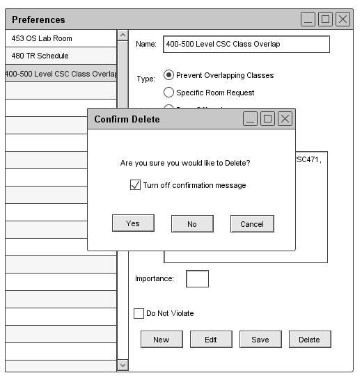
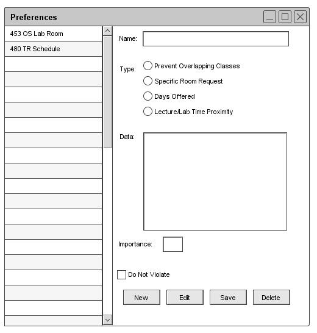

2.4.1.3. Remove Preferences
When the user wants to remove a entry from the list of preferences, the user must click the preference from the left side list
and click "Remove". At that time the user is presented with a pop-up to verify that the user wishes to remove the selection
from the list as shown in Figure 40.

Figure 40: Remove Preference
If the user selects "Cancel" nothing is done. However if the user clicks "Yes" the entry is permanently deleted and will
no longer appear as shown in Figure 41.

Figure 41: Removing Preference
Prev: preferences-edit
| Next: administrator preference settings
| Up: functional
| Top: index